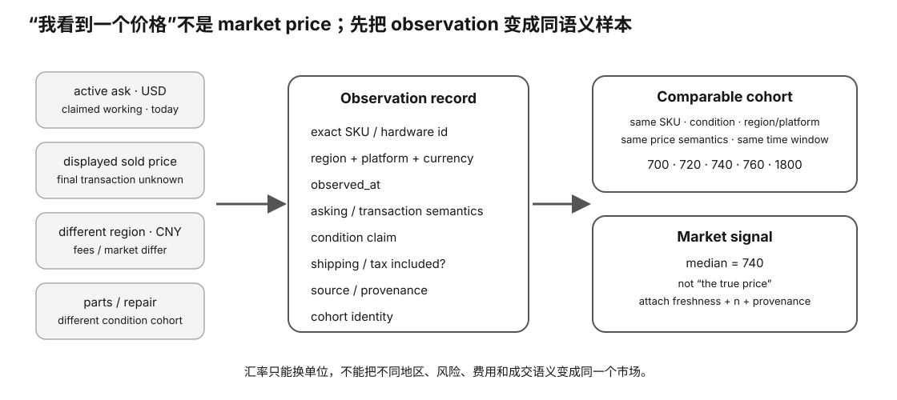

Secondhand Market · L0
二手 GPU 市场：价格不是一个数字，而是一组带来源和条件的证据
“RTX 3090 现在多少钱？”看似简单，实际上至少要先回答：哪个国家/平台、挂牌还是成交、哪种成色、是否含税运、样本日期、是否同一 SKU、是否可退。不会区分这些语义，任何“市场价”都可能误导购买。
Prerequisite Check
你应理解硬件决策中的 hard gate、UNKNOWN 与 TCO。无需懂统计学。
真实问题：为什么同一天你能看到同型号显卡从 500 到 1500 美元？
因为展示价格并不等于同一种经济事件。常见数据至少包括：
- 卖家挂牌价；
- 平台标记已售但未公开最终成交价；
- 可以确认的成交价；
- 拍卖当前出价；
- 含整机/配件的捆绑价格；
- 故障/维修/矿卡/无保修特殊成色；
- 不同地区、税费、货币与物流。
如果把这些混在一起算平均数，得到的是一个“数学上有数字、经济上没意义”的结果。
1. 先定义 observation，而不是先抄价格
每条市场记录至少应该有：
hardware_id / exact SKU market / region currency observed_at price price_semantics condition claim shipping/tax inclusion source/provenance sample/cohort identity
课程 Intelligence lane 使用不同 evidence grade，就是为了避免把弱信号冒充成交事实。

2. Asking price 与 transaction price 是不同变量
挂牌价告诉你卖家希望多少钱；成交价才告诉你市场实际交换了多少钱。两者之间可能存在议价、优惠券、退货、捆绑、平台税费等差异。
3. Cohort：只有同一类样本才适合算中位数
假设你搜 3090：
- 24 GB 正常消费版；
- 水冷改装；
- 只有散热器/空盒；
- 维修故障卡；
- 整机拆卖；
- 海外包税；
- 专业 OEM 型号。
这些不能无脑放进同一 median。先定义 cohort，例如：
same exact product class + working/claimed-working condition + same region/platform + same price semantics + same observation window
4. 为什么中位数常比平均数更适合二手挂牌？
二手市场常有极端离群值：天价钓鱼、故障白菜价、误标。平均数容易被少量极端值拖动；中位数对离群值更稳健。
例：
700, 720, 740, 760, 1800 median = 740 mean = 944
但中位数也不是魔法：如果样本本身混 cohort，median 仍然没有意义。
5. Freshness：市场数据有保质期
GPU 二手价格会受新品发布、显存需求、AI 热潮、矿业周期、汇率、库存、驱动支持等影响。三个月前的“好价”可能今天完全失效。
因此记录时间并定义 freshness policy：
- 近期 active decision 使用更短窗口；
- 历史趋势可保留旧样本，但不得冒充当前报价；
- 刷新时 append 新 observation，不覆盖旧历史。
6. Region / currency：不能只做汇率换算
中国闲鱼、美国 eBay/OfferUp、日本 Mercari 等市场存在不同：
- 税费/手续费；
- 保修与退货制度；
- 假货/维修卡风险；
- 物流损坏风险；
- 供需与常见 SKU；
- 议价文化。
汇率只能转换货币单位，不能把市场制度变成同一个 cohort。
Worked Example：你看到三个“3090 市场价”
假设资料里出现：
A: 1499 USD — eBay active ask B: 950 USD — OfferUp listing marked sold, displayed price C: 7400 CNY — China secondary report
正确处理不是先换算后平均，而是：
- A 标为 current ask signal；
- B 标为 sold-marked displayed price，但若最终成交不可确认，不写 confirmed transaction；
- C 保留 secondary-reported provenance；
- 三者可用于观察不同市场信号，却不能直接合成一个“全球成交均价”。
7. Condition 是价格的一部分
二手 GPU 价格必须与卡况证据联动。缺少序列/外观、PCIe link、显存错误、热点温度、负载稳定性、风扇等信息的“便宜价”，实际上包含未知风险。
因此同型号同地区也至少区分：
- seller claim only；
- 有截图/视频但不可复现；
- 买家自己到货可复现实测。
8. Listing selection bias：你看到的不是完整市场
搜索页面可能按推荐排序；已售页面可能不显示所有成交；平台 API/搜索结果可能限制数量。样本必须记录采集方法，避免把“我看了前 10 条”包装成全市场统计。
Why it matters
- 防止把挂牌价冒充成交价。
- 防止用混合 cohort 的平均数做预算。
- 让价格证据可以随时间刷新而不篡改历史。
- 把卡况风险显式加入“便宜”的含义。
- 让跨地区价格比较保持语义诚实。
常见误区
- “标 SOLD 就是最终成交价”——未必。
- “样本越多越好”——混 cohort 的大样本仍然错。
- “换算成人民币就能比较美国/中国市场”——制度/税运/风险不同。
- “最低价就是好价”——可能故障/骗局/配件/特殊成色。
- “三个月前价格还能当现在市场价”——必须 freshness check。
小实验：建立一个 10 条 market observation cohort
任选一个 SKU，不要求购买。定义地区、平台、条件与 price semantics 后收集 10 条。剔除不属于 cohort 的项目，并写清剔除理由。
记录 median、min/max，但不要因为样本少就写“真实市场成交价”。你的完成证据是 cohort 定义、来源和语义，而不是漂亮数字。
无购买路径
本课纯 L0。只做市场观察，不联系卖家、不付款。动态价格永远属于 Intelligence lane，教材不冻结当前价格。
排错
- 结果价格跨度巨大：先查 cohort 是否混入故障/配件/整机。
- 平台隐藏成交价：降级证据语义，不猜。
- 跨市场无法统一：保留多市场信号，不强制合并。
- 样本太少：标注低样本，不扩大结论。
Retrieval Practice
- asking price 与 transaction price 的经济语义有什么不同？
- 为什么 SOLD-marked displayed price 仍可能不是确认成交价？
- 什么是 cohort？为什么 median 之前必须先定义 cohort？
- 举例说明汇率换算不能消除哪些跨市场差异。
- 为什么 market observation 应 append 而不是覆盖历史？
- 卡况证据强弱怎样影响你对“便宜”的解释？
Decision Rule
没有明确 provenance、price semantics、cohort、日期和 condition context 的价格，只能当线索，不能进入个人买入上限或“划算”结论。UNKNOWN 不用补成假成交价。
Transfer
同样的方法可以用于二手 CPU、服务器、SSD、Mac、整机甚至模型 API 价格：先定义观察对象和语义，再统计。